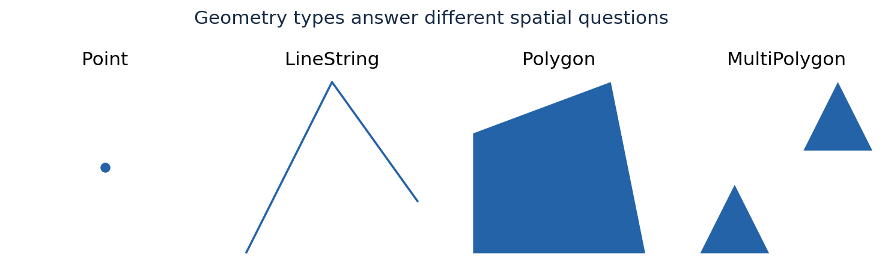
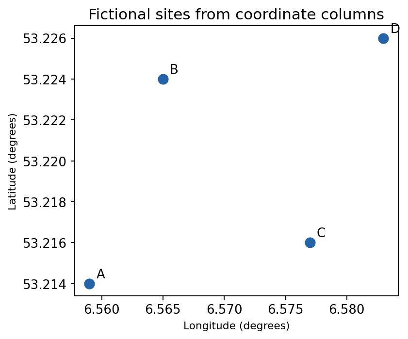
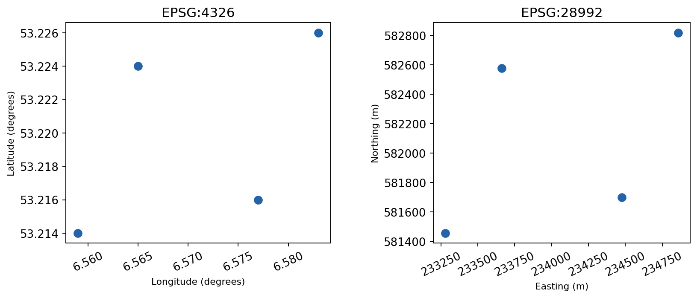
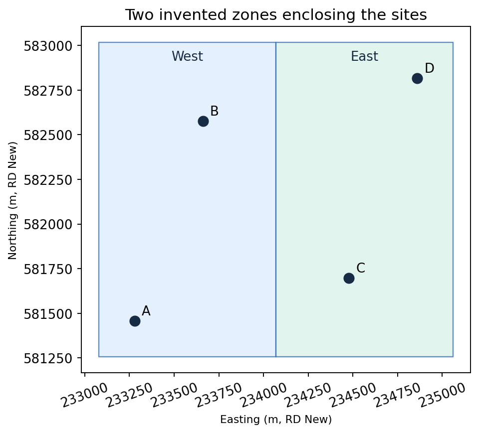
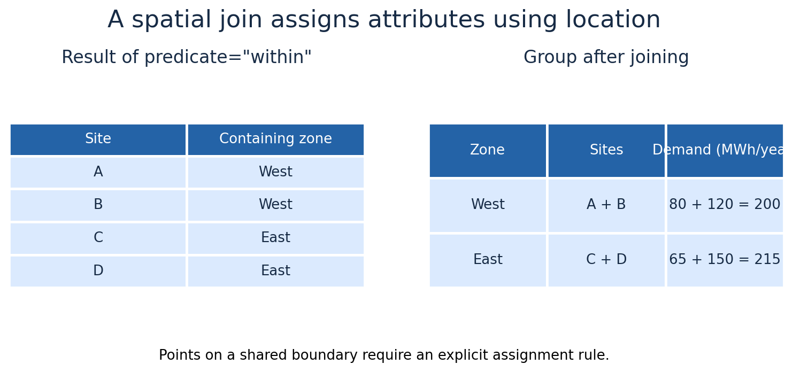
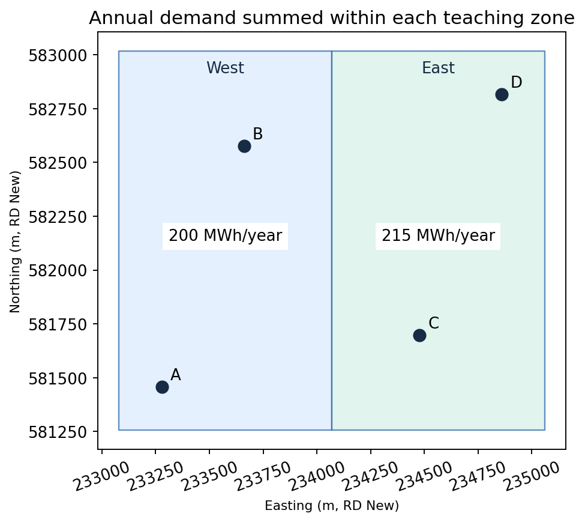
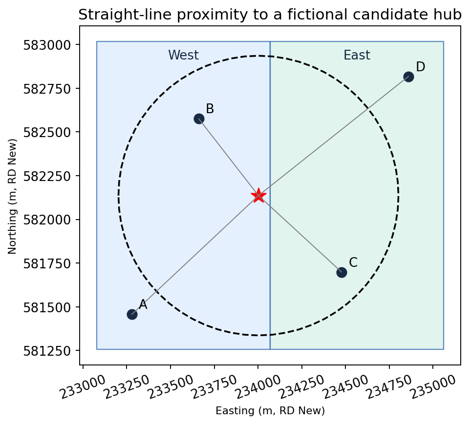
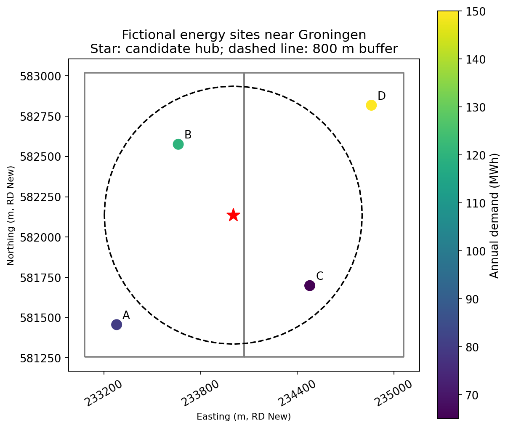

GeoPandas: Connecting Energy Data to Locations#

GeoPandas extends pandas with geometries and spatial operations. It connects attributes such as demand or capacity with points, lines, and polygons.
Explore the official introduction and user guide.
Your task#
Create 06-geopandas.ipynb. Locate fictional energy sites near Groningen, assign them to illustrative zones, identify sites near a potential hub, and export a map and GeoPackage.
Complete the pandas and Matplotlib lessons first. Coordinates and energy values below are synthetic teaching data. Neither the sites nor the zones represent actual buildings, municipal boundaries, or grid service areas.
Learning objectives#
Explain geometry types and the active geometry column.
Create a GeoDataFrame from coordinate columns.
Distinguish assigning a CRS from transforming coordinates.
Calculate planar areas and distances in an appropriate projected CRS.
Use spatial joins and aggregate site attributes by zone.
Map numerical attributes and export spatial files.
Prepare the environment#
In Miniforge Prompt on Windows or Terminal on macOS, activate the existing course environment and install GeoPandas:
conda activate managing-data
mamba install -c conda-forge geopandas
Restart your notebook kernel after installation if necessary. Select Python (managing-data).
In the notebook, import:
from pathlib import Path
import pandas as pd
import geopandas as gpd
import matplotlib.pyplot as plt
from shapely.geometry import box
Tables with geometry#
A GeoDataFrame behaves like a pandas DataFrame but also contains geometry. Its active geometry column is used by operations such as .area, .distance(), and .plot().
Geometry |
Possible energy application |
|---|---|
Point |
A measurement location or a simplified installation location |
LineString |
A network route |
Polygon |
A building footprint or study boundary |
MultiPolygon |
An area made of several separate polygons |
A building represented as a point has no footprint area. Geometry choice determines which spatial questions can be answered.


Fig. 25 Points represent locations, lines routes, and polygons areas. These shapes are schematic.#
Create fictional site locations#
site_table = pd.DataFrame({
"site_id": ["A", "B", "C", "D"],
"longitude": [6.559, 6.565, 6.577, 6.583],
"latitude": [53.214, 53.224, 53.216, 53.226],
"annual_demand_mwh": [80.0, 120.0, 65.0, 150.0],
"pv_capacity_kwp": [25.0, 40.0, 20.0, 60.0],
})
sites = gpd.GeoDataFrame(
site_table,
geometry=gpd.points_from_xy(site_table["longitude"],
site_table["latitude"]),
crs="EPSG:4326",
)
print(sites[["site_id", "geometry"]])
print(sites.crs)
print(sites.geom_type)
points_from_xy() expects x then y: longitude then latitude for these coordinates. Reversing them creates incorrect locations.


Fig. 26 Longitude becomes x and latitude becomes y. These four sites are fictional.#
Understand coordinate reference systems#
A coordinate reference system (CRS) explains what coordinate numbers mean.
EPSG:4326 uses angular longitude and latitude coordinates in degrees.
EPSG:28992, Amersfoort / RD New, is a projected CRS suitable for local planar measurements in the European Netherlands, using metres.
Transform the coordinates:
sites_m = sites.to_crs("EPSG:28992")
print(sites_m.crs)
print(sites_m.geometry.x)
set_crs() describes the existing coordinates without changing their numbers. Use it only when the CRS is known but missing or incorrectly assigned. to_crs() actually transforms coordinates from an already defined CRS.
Do not assign EPSG:28992 directly to longitude and latitude values. That would mislabel degrees as metres. Projecting the geometry also does not change the original longitude and latitude attribute columns.


Fig. 27 to_crs() changes coordinates while preserving locations. Use projected metres for local planar distances and areas.#
Check geometry quality#
print("Missing geometries:", sites_m.geometry.isna().sum())
print("Empty geometries:", sites_m.geometry.is_empty.sum())
print("Valid geometries:", sites_m.geometry.is_valid.all())
print("Unique identifiers:", sites_m["site_id"].is_unique)
Valid geometry does not prove that a location is correct. Also inspect coordinate ranges, units, source information, and the resulting map.
Create illustrative zones#
For a self-contained exercise, construct two adjacent rectangles enclosing all sites. They are teaching zones, not real administrative or electrical boundaries.
xmin, ymin, xmax, ymax = sites_m.total_bounds
padding_m = 200.0
split_x = (xmin + xmax) / 2
zones = gpd.GeoDataFrame(
{"zone": ["West", "East"]},
geometry=[
box(xmin - padding_m, ymin - padding_m,
split_x, ymax + padding_m),
box(split_x, ymin - padding_m,
xmax + padding_m, ymax + padding_m),
],
crs=sites_m.crs,
)
zones["area_km2"] = zones.area / 1_000_000
print(zones[["zone", "area_km2"]])
Because the projected coordinates use metres, polygon area is returned in square metres. Dividing by one million converts it to square kilometres.


Fig. 28 These rectangles are teaching zones, not administrative or grid boundaries.#
Assign sites to zones with a spatial join#
assigned = gpd.sjoin(
sites_m,
zones[["zone", "geometry"]],
how="left",
predicate="within",
)
print(assigned[["site_id", "zone", "annual_demand_mwh"]])
if assigned["zone"].isna().any():
raise ValueError("Some sites were not assigned to a zone.")
if assigned["site_id"].duplicated().any():
raise ValueError("A site matched more than one zone.")
The spatial join matches by location, whereas a pandas merge matches attribute keys. Both inputs must use the same CRS.
within excludes points lying exactly on polygon boundaries. intersects includes boundaries but can match a boundary point to two adjacent zones. Choose and document a boundary rule rather than silently double-counting.


Fig. 29 The spatial join assigns a zone to every site before grouping attributes.#
Aggregate demand by zone#
zone_demand = assigned.groupby("zone")["annual_demand_mwh"].sum()
zones["annual_demand_mwh"] = zones["zone"].map(zone_demand).fillna(0)
zones["demand_density_mwh_km2"] = (
zones["annual_demand_mwh"] / zones["area_km2"]
)
print(zones[["zone", "annual_demand_mwh", "demand_density_mwh_km2"]])
assert abs(zones["annual_demand_mwh"].sum()
- sites_m["annual_demand_mwh"].sum()) < 1e-9
Here a zone with no assigned sites receives zero because our fictional site inventory is complete. An incomplete real inventory would not justify interpreting missing demand as zero.
The density describes this invented inventory within our chosen rectangles. It is not a measured urban demand density.


Fig. 30 West totals 200 MWh/year and East 215 MWh/year, preserving the 415 MWh/year inventory.#
Distances and buffers#
Create an illustrative hub location and project it into the same CRS:
hub = gpd.GeoDataFrame(
{"hub": ["Candidate hub"]},
geometry=gpd.points_from_xy([6.570], [53.220]),
crs="EPSG:4326",
).to_crs(sites_m.crs)
hub_point = hub.geometry.iloc[0]
sites_m["distance_to_hub_m"] = sites_m.distance(hub_point)
nearby_sites = sites_m.loc[sites_m["distance_to_hub_m"] <= 800].copy()
hub_buffer = hub.copy()
hub_buffer["geometry"] = hub_buffer.geometry.buffer(800)
print(nearby_sites[["site_id", "distance_to_hub_m"]])
These are planar straight-line distances in metres. They do not represent road routes, cable lengths, or network connection feasibility. An 800 m buffer expresses proximity only.


Fig. 31 The dashed 800 m buffer contains sites B and C. Distances are planar straight lines, not network routes.#
Make a map#
fig, ax = plt.subplots(figsize=(7, 6), layout="constrained")
zones.boundary.plot(ax=ax, color="grey", linewidth=1.5)
hub_buffer.boundary.plot(ax=ax, color="black", linestyle="--")
sites_m.plot(ax=ax, column="annual_demand_mwh", cmap="viridis",
markersize=100, legend=True,
legend_kwds={"label": "Annual demand (MWh)"})
hub.plot(ax=ax, marker="*", color="red", markersize=180)
for _, row in sites_m.iterrows():
ax.annotate(row["site_id"], (row.geometry.x, row.geometry.y),
xytext=(6, 6), textcoords="offset points")
ax.set(title="Fictional energy sites near Groningen\nStar: candidate hub; dashed line: 800 m buffer",
xlabel="Easting (m, RD New)", ylabel="Northing (m, RD New)")
ax.set_aspect("equal")
ax.ticklabel_format(useOffset=False, style="plain")
ax.tick_params(axis="x", rotation=30)
ax.xaxis.set_major_locator(plt.MaxNLocator(4))
plt.show()
The map uses no background tiles and requires no data download. The logo at the top of the lesson is an external image. Equal aspect keeps the projected x and y scales consistent.


Fig. 32 Expected map from the code: demand controls point colour; the star and dashed boundary identify the candidate hub and buffer.#
Read and write spatial files#
output_directory = Path("outputs")
output_directory.mkdir(exist_ok=True)
output_file = output_directory / "groningen_teaching_sites.gpkg"
sites_m.to_file(output_file, layer="sites", driver="GPKG", index=False)
reloaded_sites = gpd.read_file(output_file, layer="sites")
print(reloaded_sites.crs)
print(reloaded_sites.columns)
fig.savefig(output_directory / "fictional_energy_sites.png",
dpi=300, bbox_inches="tight")
GeoPackage stores geometry, attributes, and CRS information and can be opened in QGIS. Use a dedicated output filename: writing the same layer again replaces its previous contents with the default write mode.
For a real study, replace the fictional sites and rectangles with documented inputs. Read local layers using gpd.read_file(), inspect their CRS and identifiers, and check coverage before applying the same operations.
Optional practice#
Change proximity assumptions#
Compare 400 m, 800 m, and 1,200 m hub distances. Count sites and sum demand within each threshold. Explain why proximity alone does not establish suitability for an energy hub.
Map a different attribute#
Map pv_capacity_kwp instead of demand. Change the colour-bar label and title accordingly. Export both maps.
Investigate a boundary case#
Create a point exactly on the shared zone boundary using split_x and a y-coordinate between ymin and ymax, with the same projected CRS. Compare within and intersects joins. Explain missing matches and duplicate rows.
Export another layer#
Write the zones to a new GeoPackage and read them back. Check area units, row counts, and CRS. Open the sites and zones in QGIS if available.
Explain the spatial assumptions#
Describe the difference between point and footprint representations, between a real grid service area and our rectangles, and between straight-line distance and network distance.
Check your work#
Restart the kernel and run all cells. Check that all four sites receive one zone and that aggregated demand equals 415 MWh. Confirm that your map and exports identify the data as fictional.